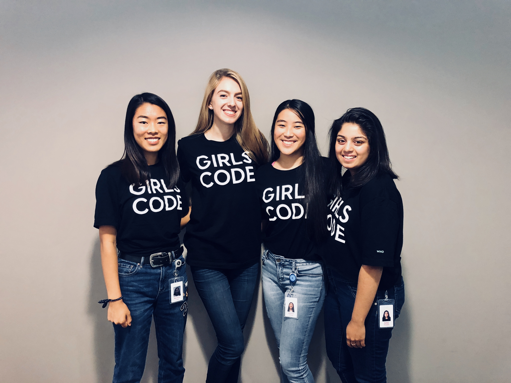

Meet the Creators!

Michelle: I have a dog named Ginni and she is simply the cutest thing. As far as coding goes, I love how creative you can get with
all the capabilities of the different languages.
Alise: I may not have a pet, but I am a huge animal lover! I'd have to say that dogs are definitely my favorite... I love coding and think
that it is such an incredible way to make the world a better place.
Bonnie: I love cats and have adopted one of my own: Tenny. She loves cuddling and is just the most wonderful companion! I love coding and always appreciate a good challenge.
Gargi: I am an avid cat lover, and have adopted one myself. Her name is Minty and she is just the best! I'm an avid coder and plan
to continue on with my passion for coding.